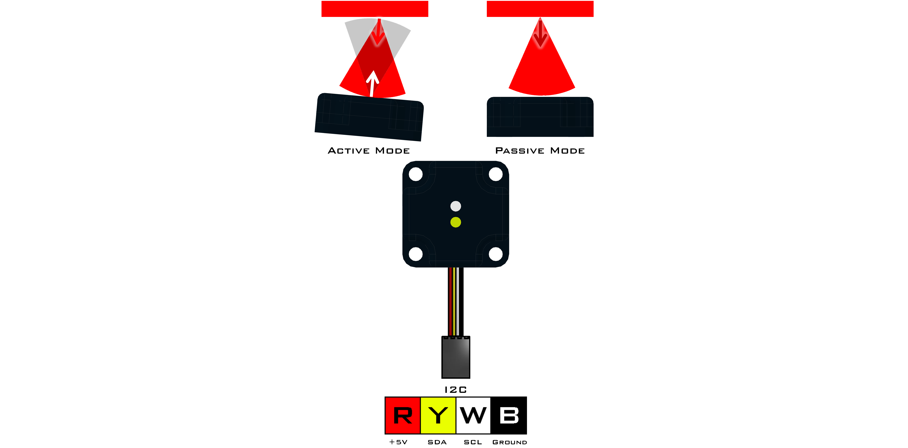
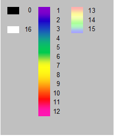

Color Sensor (45-2018)
The Color Sensor is used to detect the color of an object or a visible light source. Along with raw and adjusted RGB values, the device can also return a color number corresponding to a the colors listed below in the documentation. Calibration steps must be taken as needed based on the environment and ambient lighting for the most accurate readings. Maximum detection distance of the color sensor is approximately 7cm and it is recommended that during active mode the device is placed at a slight angle to avoid white light reflecting from the LED.
Sensor Type : Four Wire I2C
Default I2C Address : 0x3C
Sensor ID Code : 0x67
Dimensions : 32mm x 32mm x 11mm
Mounting Holes : 24mm x 24mm
Power : 5V DC, 22mA Max
Signal Logic Levels : Logic 0 - 0V, Logic 1 - 5V
I2C Bus Speed : 100kHz max
I2C Address Change Option : Yes (Even Number 0x10 - 0xEE)Color Sensor Visual Programming Blocks
Color Sensor Python Library Information

Register | Function |
|---|---|
0x00 | Sensor Firmware Revision |
0x01 | Manufacturer Code |
0x02 | Sensor ID Code |
0x03 | Command |
0x04 | Color Number |
0x05 | Red Value |
0x06 | Green Value |
0x07 | Blue Value |
0x08 | White Value |
0x09 | Color Index Number |
0x0A | Red Index |
0x0B | Green Index |
0x0C | Blue Index |
0x0D | Undefined |
0x0E/0x0F | Red Reading (lsb/msb) |
0x10/0x11 | Green Reading (lsb/msb) |
0x12/0x13 | Blue Reading (lsb/msb) |
0x14/0x15 | White Reading (lsb/msb) |
0x16/0x17 | Normalized Red Reading (lsb/msb) |
0x18/0x19 | Normalized Green Reading (lsb/msb) |
0x1A/0x1B | Normalized Blue Reading (lsb/msb) |
0x1C/0x1D | Normalized White Reading (lsb/msb) |
Command | Operation | EEPROM Auto-Update |
|---|---|---|
0x00 | Active Mode (LED On) | X |
0x01 | Passive Mode (LED Off) | X |
0x35 | 50 Hz Operating Frequency | X |
0x36 | 60 Hz Operating Frequency | X |
0x42 | Black Level Calibration | X |
0x43 | White Balance Calibration | X |
Commands
The command register may be set to any of the values from the command table. Once a command value is entered into the command register the value will be saved in the EEPROM.
Active Measurement Mode
Command = 0x00
In active measurement mode, the sensor takes a reading by illuminating a surface with a white LED and measuring the reflected light. Active mode is useful in identifying the color of a surface.Passive Measurement Mode
Command = 0x01
In passive measurement mode, the sensor takes a reading without the white LED on. Therefore passive measurement mode is most useful in determining the color of a light source like an LED.Operating Frequency
Command = 0x35(50Hz) or 0x36(60Hz)
The operating frequency is provided to enable the sampling to coincide with the normal flickering associated with artificial lighting. This helps to reduce signal noise and other issues. The operating frequency can be set to 50Hz or 60Hz.Black Level Calibration
Command = 0x42
Black level calibration will run 64 measurement cycles to obtain an average value for each of the 3 color channels.
During black level calibration, the sensor should be placed such that no surface is within 1.5m forward of the sensor elements. The calibration process last about 1.5 seconds and when calibration is complete, the LED will blink briefly and then the command register will be reset to 0x00 or 0x01 depending on the mode save in EEPROM.
Black level calibration must be completed before white balance calibration.White Balance Calibration
Command = 0x43
White balance calibration will run 64 measurement cycles to obtain and average value for each of the 3 color channels and are adjusted according to the black level calibration values.
During white balance calibration, the sensor must be placed approximately 5cm (2in) from a white target. The target must be very white and not allow light to pass through the material. At least 3 sheets of high quality copy paper will make a satisfactory white surface for calibration. The calibration process last about 1.5 seconds and when calibration is complete, the LED will blink briefly and then the command register will be reset to 0x00 or 0x01 depending on the mode save in EEPROM.
Color Number
The color number register returns a single number representing the color estimate. The number corresponds to the following figure.

Color Values
The color values are returned separately as red, green, blue and white. The color value is a measure of the current detection levels for each primary color.
Color Index Number
The color index number is a single 6 bit number. Bits (5:4) encode the red signal level, bits (3:2) encode the green signal level and bits (1:0) encode the blue signal levels.
D7 | D6 | D5 | D4 | D3 | D2 | D1 | D0 |
|---|---|---|---|---|---|---|---|
0 | 0 | Red 1 | Red 0 | Green 1 | Green 0 | Blue 1 | Blue 0 |
Color Indexes
The color index will return the current analog signal levels for red, green and blue separately. The color with the greatest intensity is set as 0xFF while the other two colors indexes are set as a proportion of 0xFF.
Color Readings
The color reading registers return the current analog signal levels as 16 bits values forred, green, blue and white.
Color Normalized Readings
The color normalized readings will return the current levels for the color components and white channel that are adjusted for gain and offset.